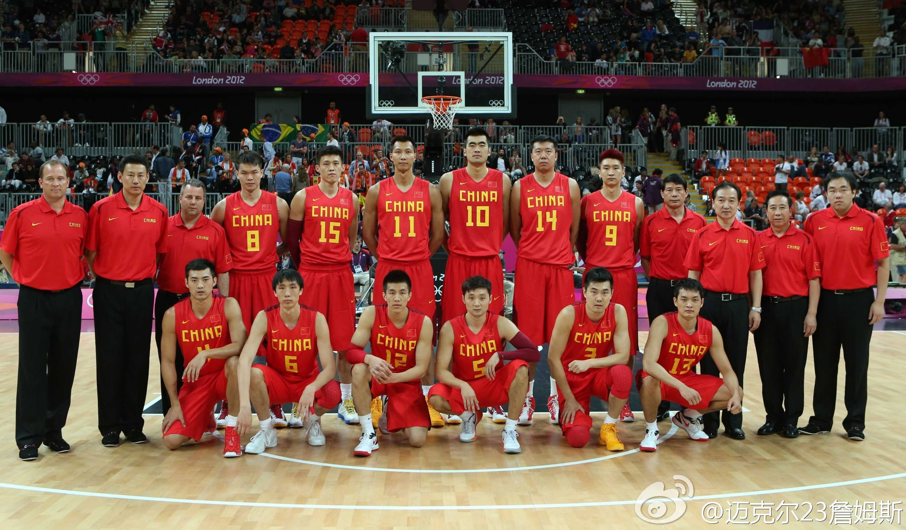

中国男篮
中国男篮始建于1917年，1936年加入国际篮联，由于政治原因于1958年中国男篮退出，于1974年以中华人民共和国名义恢复了会员资格，中国男篮是亚洲地区实力最强的国家级篮球队，常年垄断所参加的亚洲各项篮球赛事冠军，并保持亚洲篮球锦标赛夺冠次数最多的记录，15次。球队自1978年开始参加世界篮球锦标赛之旅以来，也一直是亚洲球队在历届世锦赛上最好名次获得者。在中国队所参加的几次世锦赛中，分别获得了第11、12、9、14、8名，球队在世界大赛中的最好成绩为1994年圣彼得堡友好运动会上取得的季军。

近些年来，中国男篮展露出一些可以击败欧洲顶级球队的能力。在2004年的雅典奥运会中，中国队在主教练哈里斯(Del Harris)的带领下在小组赛最后一场比赛中67-66险胜世锦赛卫冕冠军塞黑男子篮球队取得了晋级8强的资格。在2006年日本世界锦标赛中中国也从D组脱颖而出在最后两场小组赛击败了塞内加尔和斯洛文尼亚后晋级淘汰赛阶段的16强，最终是在16强中64-95败给了后来淘汰美国取得赛事银牌的希腊队，总排名为世锦赛24支球队的第15名。
球队拥有NBA休斯敦火箭队主力中锋姚明这样的超级明星球员和奇才队的易建联、湖人队的孙悦这样的有实力的球员，还有王治郅这样加盟过NBA联盟的优秀球员，现任主教练为杜锋 。
中国女篮
中国女子篮球队是世界强队之一。1984年5月5日至16日，第二十三届奥运会女子篮球预选赛在古巴哈瓦那举行。我国女篮夺取第一名，获得参加奥运会女篮比赛的资格。7月29日，第二十三届奥运会篮球比赛在美国的洛杉矶举行，我国女篮首次参加奥运会的比赛，结果夺得铜牌。
这次中国女子篮球队教练员是杨伯镛、王利发，运动员宋晓波、邱晨、丛学娣、陈月芳、柳青、郑海霞、修丽娟、张月琴、张惠、李晓勤、王军、巴燕。我国际裁判罗景荣、张雨生赴赛担任裁判。
我们也看到了中国女子篮球队毕竟是一支年轻的队伍，其运动技术的稳定状况、运动竞技状态和水平的保持，也曾出现过多次反复。
1984年10月13日至24日，第10届亚洲女子篮球锦标赛在中国上海举行。中国女篮以61：62的比分负给韩国女篮，居第二名。1985年8月24日至9月4日，第十三届世界大学生运动会篮球比赛在日本举行，中国队本有可能取得对南斯拉夫与美国队（临时由大学生组队）比赛的胜利，但却负于了对方，被挤出了四强之列。1986年8月8日至18日，第十届世界女子篮球锦标赛在苏联莫斯科举行， 中国女篮 中国女篮 中国女篮在小组预赛的首场比赛中，以74：80的比分，反胜为败地输给了捷克斯洛伐克队。这样，促使中国篮坛对女篮队员的身体与技术、战术，训练与比赛中的战略战术等多方面的问题进行研究。
2009年9月24日，第23届女篮亚洲锦标赛中国女篮以91-70击败韩国队获得冠军
但无数事实证明，中国女篮确实是一支进步迅速、提高显著的世界劲旅。自1981年改组以来，在亚洲和世界大赛上打出好成绩，实现了篮球要大上，“女篮先上”的既定方针，出现了中国女篮率先冲出亚洲，走向世界，男篮紧紧跟上的大好形势。
1984年8月15日，共青团中央授予中国女篮“全国新长征突击手”称号。8月18日全国妇联授予中国女篮全体队员“三八”红旗手称号。8月19日，中国人民解放军总政治部决定授予中国女篮12名队员三等军功奖章。8月19日，国家体委决定授予在第二十三届奥运会上取得优异成绩的篮球运动员宋晓波、修丽娟、陈月芳、郑海霞、邱晨、李晓勤、张惠、丛学娣、张月琴、巴燕、王军、柳青“体育运动一级奖章”，以示奖励。